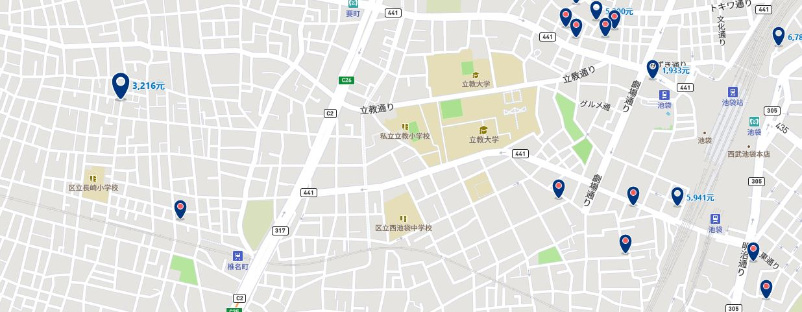
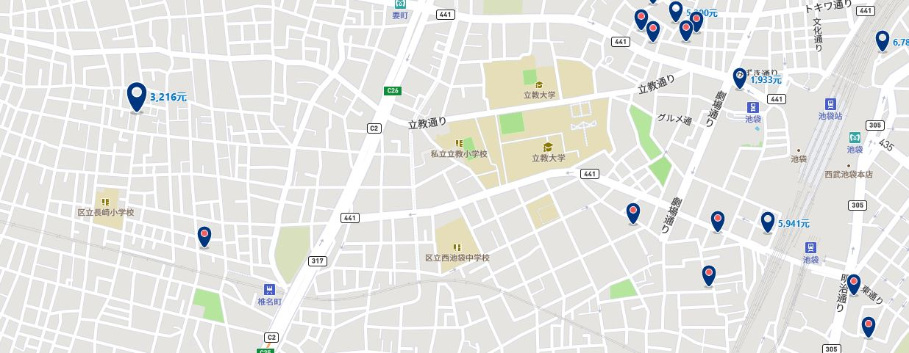
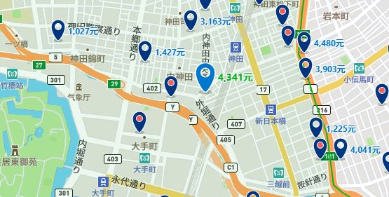
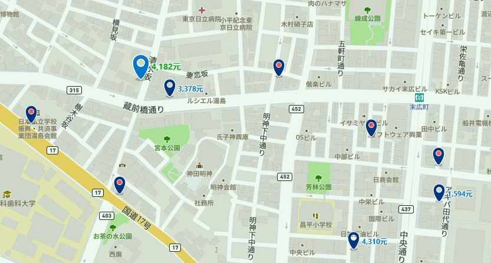
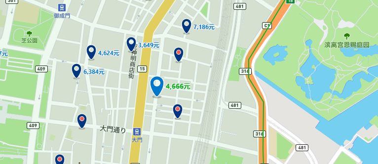

备选1：西向家庭旅馆 地址：171-0051 东京都, Toshima-ku, Nagasaki 2-34-16, 日本
 Selected
Selected地图

价格：3216RMB/七晚。
002.住宿
备选1：西向家庭旅馆 地址：171-0051 东京都, Toshima-ku, Nagasaki 2-34-16, 日本
Selected
地图

价格：3216RMB/七晚。
备选2：神田可可尼东正经济型酒店 地址：101-0047 东京都, Chiyoda-ku Uchikanda 3-2-10 , 日本

地图

价格：4341RMB/七晚。
备选3：御茶之水圣山酒店 地址：113-0034 东京都, Bunkyo-ku Yushima 2-1-19 , 日本
地图

价格：4182RMB/七晚。
备选4：名铁滨松酒店 地址：105-0013 东京都, Minato-ku, Hamamatsucho 1-19-14, 日本
地图

价格：4689RMB/七晚。
003.每天的行程
Day01:
Day02:
Day03:
Day04:
Day05:
Day06:
Day07: 回
19,Jun: 上野(公园+动物园)
20,Jun: 秋叶原，吉卜力工作室/东京大学
21,Jun: 涩谷，新宿，银座，池袋
22,Jun: 富士山(五合目即可)
23,Jun: 东京塔，晴空塔
24,Jun: 代代木公园，六本木，国立竞技场(暂定)
25,Jun: 皇居，浅草寺，台场
26,Jun: 回
004.景点具体的细节
上野
涩谷
新宿
银座
秋叶原
池袋
富士山
东京塔与晴空塔
吉卜力工作室
浅草寺
台场
上野
成人430日元,大学生130日元。高中生以下，未满18岁，65岁以上免费。每个月的第二和第四周的周六，11月3日（日本的文化节）常设展免费。企划展另外收费。休馆日为每周一，如周一是节假日的话，次日休馆。

涩谷
涩谷与新宿、池袋并称为东京的三大副都心，是东京象征性的时尚流行发源地。涩谷车站前的十字路口因为人潮汹涌，以及各种巨幅广告广告牌与电视墙，被誉为世界上最著名的十字路口。车站周边有东急百货店、涩谷Hikarie等百货，附近更还有BicCamera、山田电机LABI家电超市、松本清药妆店、唐吉诃德、东急HANDS生活杂货店、THE SUIT COMPANY西装店等大大小小丰富的店家可以逛。而涩谷美食附近的有一兰拉面、鱼米寿司、鸟竹串烧、锅藏、茶庭、九州料理MOTSURAKU等美味餐厅可以享受。而同样位于涩谷地区的代官山则是聚集了各种咖啡厅、时装店和杂货店等时髦商店。此外，附近的惠比寿花园广场展望台、目黑雅叙园等涩谷景点也是观光的好去处。

新宿
新宿在日本的东京，而日本的东京可以说是日本最繁华的城市之一，而新宿是日本最繁华并且最著名的商业区之一，它和涩谷、池袋都是东京非常有名的地方。这里有很多重要的办公大楼，并且还有各种百货大楼，各种品牌店，还有各种好吃的美食店。日本的城市街道，通常情况下都比较繁华，所以在这里玩，最好轻装上阵，不要携带太大的东西。新宿的城市区域划分，是以新宿火车站为中心，分为新宿口、南口和西口3个商业区。这三个商业区里，都有很密集的商业设施。在新宿，有很多拉面馆、酒屋，都可以吃东西。不过，还是要去吃下面几家非常有特色的店。在火车站旁边2分钟的地方，有一家叫做鳗 登亭（新宿店），这个店是从江户时代就开始开起了，在日本是非常有名的店铺，很多国外的游客都在这里吃鳗鱼，这边的鳗鱼是比较高级的料理，可以品尝。并且，店内有中文菜单和会讲中文的店员，所以完全不用担心语言问题。喜欢吃寿司的朋友，可以去看看寿司三昧 匠 银座６丁目店。这家店开了有十几年了，在国际上都非常有名，金枪鱼寿司，鲑鱼寿司，红虾寿司，章鱼寿司都特别好吃，一定要去看看。当然，如果想吃便宜点的回转寿司，可以去回转寿司活 西武涩谷店。位置就在西武百货涩谷店的8楼，不过离新宿有点距离。喜欢吃天妇罗的朋友，可以去三国一 新宿东口店看看，距离就在火车站2分钟的地方，是一家日本乌冬面连锁店，在新宿十分受欢迎。整个店一共有4层楼，所以一般去了不会排队，但是还是要尽量避开用餐高峰期。这里可以吃到很多日本的简易餐食，比如炸猪排、天妇罗、乌冬面等等。特别好吃，适合预算比较少的朋友。

银座
中央大道1丁目至4丁目推荐如下：和光、三越百货、松屋百货（MATSUYA GINZA）、木村家、Apple、ISAMIYA、LV、CHANEL、MIUMIU、Dior、MCM、伊东屋文具店。带着钟塔的和光是不折不扣的银座的地标性建筑，无数日剧在银座取景时都会把和光收入镜头之中。这座始建于1932年的建筑采用了新文艺复兴样式，在银座4丁目的十字路口画出了优美的圆弧。细心的游客会在大钟的下面发现SEIKO的字样，在日语中是著名的手表品牌，精工的意思。和光的前身是“服部钟表店”（现精工控股株式会社）零售部，如今和光经营着从国内外名品手表，例如精工，和光，到高级珠宝，男女服饰到各种小物，并配有中文导购。悠悠的整点报时的钟声，还有淡雅的光，晚上来逛银座的话一定不要错过和光的霓虹灯哦。银座四丁目的十字路口处是一家名叫东京鳩居堂的店。这家店始业于1663年的京都，于1880年在东京开店，主营香制品以及和纸杂货。日本和纸于2009年正式通过联合国教科文组织的审批列入世界非物质文化遗产名录。在纸张批量廉价生产的如今，以植物纤维为原料，经过日本造纸匠人的用传统的造纸术制作而成的和纸制品。一封信笺，一张水彩小画的明信片，落落几笔亲手写下的祝福，都是轻巧带着浓厚日式氛围的伴手礼。

秋叶原
1. 秋叶原RADIO会馆:
一出车站很快就可以看到黄色大招牌的“秋叶原RADIO会馆”，起初是以贩卖电子零件以及电器为主，进入1990年代后受到大型家电连锁店的冲击，逐渐转型成以卖动漫、游戏、手办为主的商业大楼。而在2014年全新装修后进驻了许多动漫相关商店，除去地下共有10层楼的购物面积，而在地下一层开设了餐厅。
Ⅰ.Kbooks:
K-BOOKS是专门贩卖动漫相关周边的连锁店，除了秋叶原以外，在池袋也拥有10家以上的分店，占地面积很广，各种人气动漫周边都能完全掌握。
Ⅱ.Amimami:
amiami，在2017年7月盛大开幕。上来就可以看到他们家原创的广告牌娘“amico酱”，不但可以跟她互动，还能回答amiami的相关情报喔！虽然目前只能对应日文和英文，但今后还会陆续新增中文，大家可以期待一下。而这里除了动漫周边以外，还有卖游戏和手游的周边，货色丰富齐全，绝对能让你满载而归。
2.HOBBY天国:
这里从地下1层到地上7层聚集了满满的动漫周边。不管是怀旧系列还是最近超人气的作品，都可以一次买齐，而在这边的1层还可以买到热门动漫包装的点心伴手礼，自用送人两相宜喔！顺带一提，在刚刚的RADIO会馆8层有卖VOLKS的DD娃娃及其零件和小服饰等，有兴趣的冒险家们也可以过去看一下喔！
3.Sofmap秋叶原4号店 Amusement馆：
认准蓝色的招牌并写有4的，那就是Sofmap AKIBA 4号店。也许大家对Sofmap比较陌生，但他其实是BIC CAMERA旗下的家电连锁店。而这家4号店主要提供电视游戏、动漫影音、手办玩偶的贩卖，让你能轻松买到最新的热门周边。
4.Mulan中央街道店:
买取贩卖市场Mulan中央街道店，在这里贩卖的游戏和手办不但种类繁多且物美价廉，从近期到超人气的动漫周边都可以在这边找到。在秋叶原大部分的店家到了晚上7～8点就会陆续关门，但只有这家店营业到晚上10点半，大家可以在这里边逛边补充宅能量，说不定能找到意想不到的宝物喔！
5.Akiba文化ZONE:
开幕于2011年7月的AKIBA文化ZONE，全部共有7层楼，除了地下1层的剧场和6层的偶像咖啡馆外，其他楼层都是以贩卖动漫周边为中心的店铺。里面的购物面积宽广、商品种类众多，在秋叶原是一个非常具有指标性的复合式大楼。
Ⅰ.Lashinbang秋叶原店:
秋叶原店在2017年4月扩大改装重新开幕，而照片上看到的正是他们的广告牌娘“RANRAN”，在这里不但能买到各式各样的手办以及动漫周边，还有漫画、轻小说等都可以一次让各位买好买满。而且店里还有兑换外币的机器，不必担心花光钱的窘境喔！
Ⅱ.Astop Akiba Zone店
4层的ASTOP，相信大家一眼就能知道这是家格子铺型态的专卖店，除了陈列众多的动漫商品外，还有食玩、毛绒玩具、偶像周边等可以一次满足各位的探险精神。而其实在RADIO会馆2楼也有另一家分店喔！光是这2家店加起来就多达1600个格子可以慢慢选购，是一家迎合时代需求的进化型格子铺。
6.Liberty秋叶原1号店:
这里也是一家以贩卖动漫玩偶为中心的专卖店，现在光是在秋叶原就有7家分店，每家店主要卖的东西虽有些许的不同，但这里都是以优惠的价格提供给大家，想要买人气动漫手办的朋友可以来这里看看喔！店里贩卖的手办以最近流行的动漫作品居多，除了手办之外，也可以看到大趴趴玩偶等各种动漫周边。
7.秋叶原扭蛋会馆:
店内有超过500种以上的扭蛋机，而且每个月都会更换新的内容，因此被称为扭蛋的圣地。
8.电器类店铺
Ⅰ.BIC CAMERA AKIBA
BIC CAMERA在日本全国约有50家店铺，且所有店铺均位于车站附近。除了贩售人气相机、手表、电器，还有药品、化妆品、玩具、酒、眼镜等，日本制的商品应有尽有。AKIBA店于2017年6月盛大开幕，从秋叶原站只要步行3分钟就可以到达，交通十分方便。
Ⅱ.山田电机LABI 秋叶原电脑馆
离秋叶原站只需步行1分钟的LABI秋叶原电脑馆，贩卖许多有关电脑的相关用品，这里拥有地下1层到地上5层的店铺面积，另外里面有会说中文的店员，让你可以安心购物。
Ⅲ.驚安の殿堂 ドン・キホーテ 秋叶原店
唐吉诃德秋叶原店离车站距离3分钟，交通十分方便。除了贩卖一般的商品外，还有许多只有在秋叶原才能买到的动漫商品。而在5楼还特别设置了齐全的cosplay专区，让许多人趋之若鹜。另外值得一提的就是这里的6、7层为游戏中心，8层为日本偶像团体AKB48的剧场。是一家能好买好逛又好玩的综合型唐吉诃德。
Ⅳ.EDION秋叶原AKIBA店
EDION是一家在日本各地展开的家电连锁店。店内不仅有多种家电产品，还有药妆、日用品等丰富的免税产品，以及会说中文和英文的店员。各种信用卡也都可使用。

池袋

富士山（来回）

东京塔+晴空塔


吉卜力工作室

浅草寺

台场

05.地图
东京轨道交通及地铁线路图.pdf